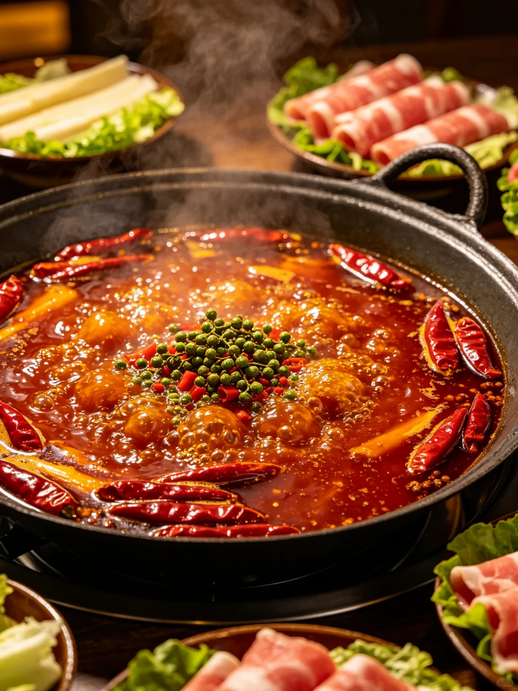
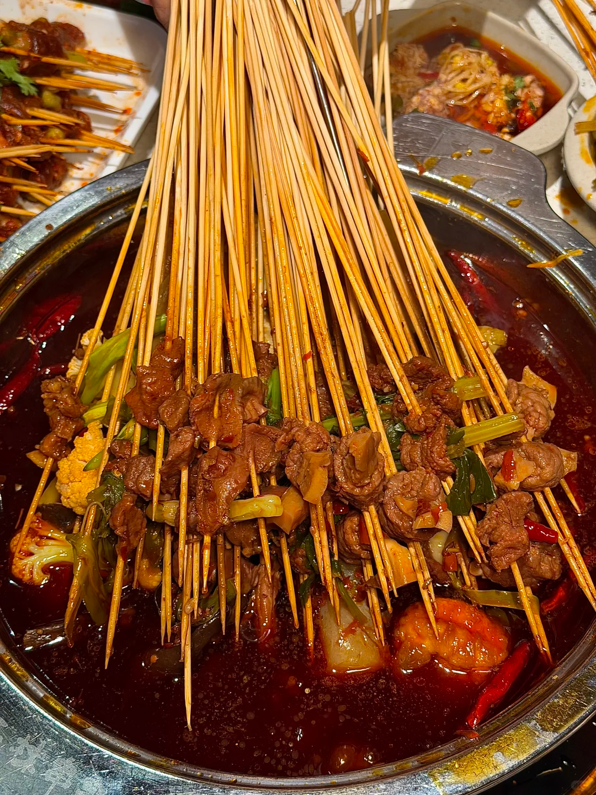
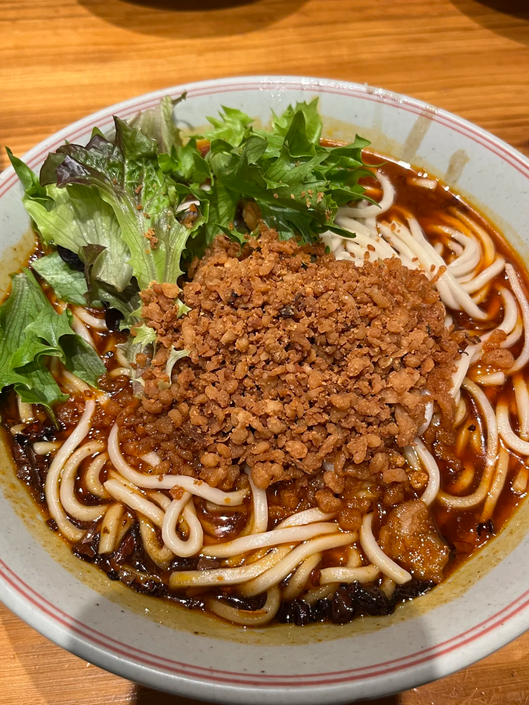
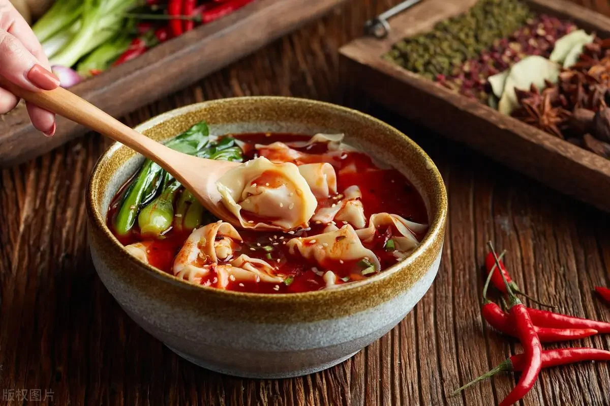
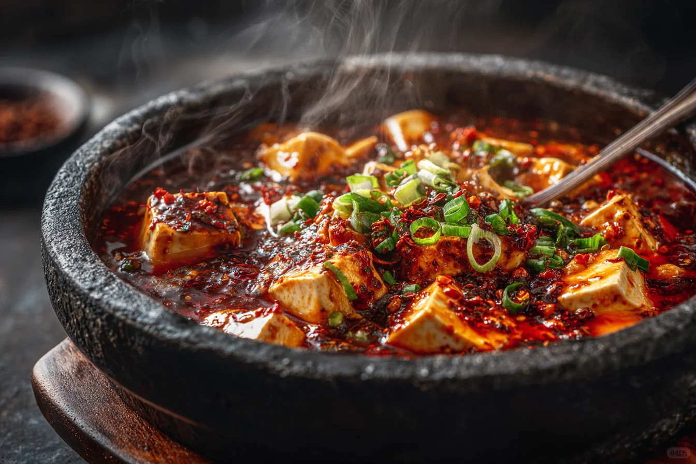
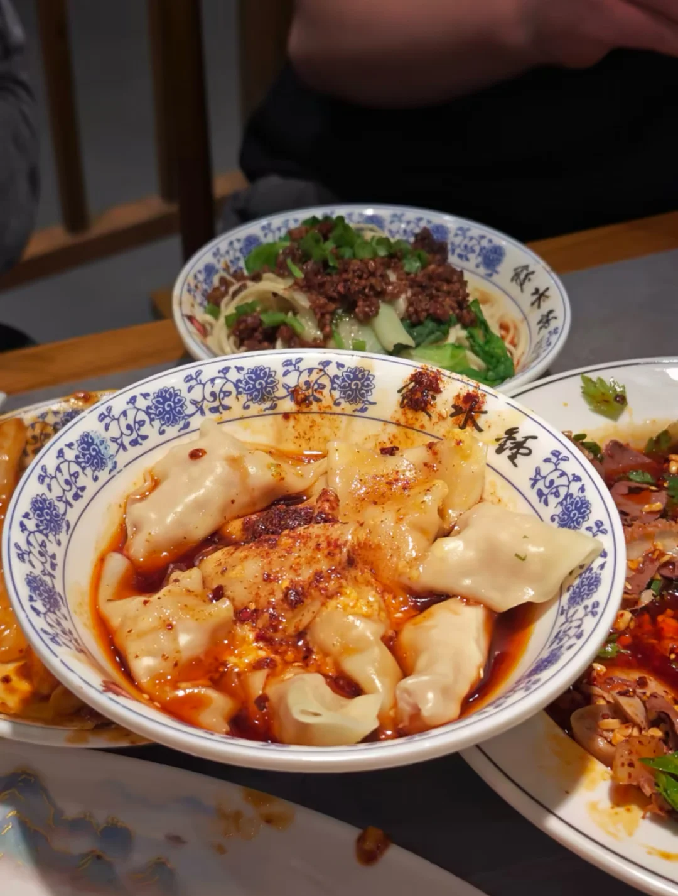

成都美食
成都作为联合国教科文组织授予的"世界美食之都"，以川菜为核心，麻辣鲜香、百菜百味， 从街头小吃到殿堂名肴，每一口都是对味蕾的极致犒赏。

成都火锅
红油翻滚，花椒飘香，毛肚、鹅肠在沸腾的牛油锅底中涮烫，麻辣鲜香，是成都美食的灵魂所在。

串串香
竹签串起各类食材，浸入秘制汤底中煮熟，蘸上干碟或油碟，经济实惠又滋味十足。

担担面
细薄的面条配上肉末、芽菜、花生碎，淋上红油辣椒，咸鲜微辣、香气扑鼻，是成都面食的经典代表。

龙抄手
皮薄馅嫩的抄手，配以红汤、清汤或酸辣汤底，一口一个，汤汁四溢，令人回味无穷。

麻婆豆腐
嫩滑的豆腐裹满麻辣的牛肉末酱汁，集麻、辣、烫、鲜、香于一身，是川菜走向世界的名片。

钟水饺
纯肉馅水饺淋上特制红酱油和蒜泥，皮薄馅饱、甜咸微辣，是成都人从小吃到大的家乡味。